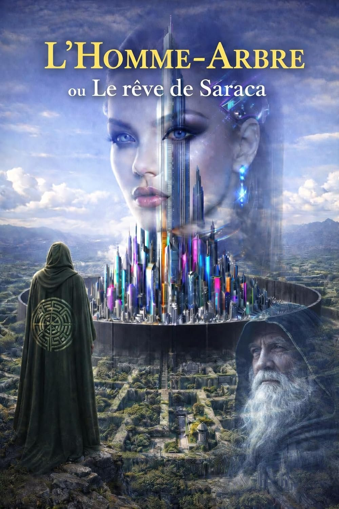

Roman d'anticipation
L'Homme-Arbre
ou Le Rêve de Saraca
An 6019. L'humanité s'est enfermée dans soixante-dix-huit mégalopoles technocratiques. Une voix s'élève, celle de l'arbre-monde, témoin patient de toute l'histoire des hommes. Une épopée entre science-fiction et fantastique, un voyage initiatique sur notre véritable place sur cette planète.
Prochainement dans votre librairie · Distribution Hachette
Acheter sur Amazon